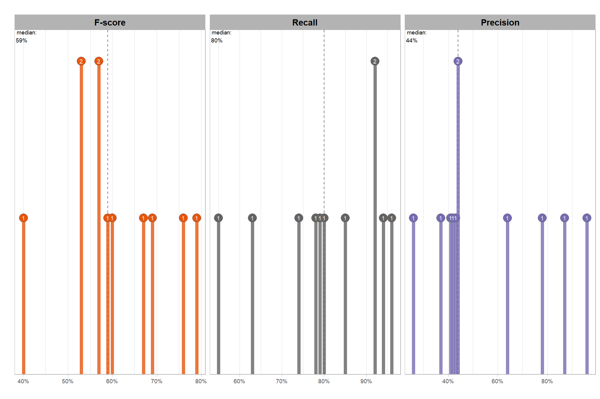

Section 7 Sensitivity Testing Method
In this section we introduce a slash pile detection workflow to perform parameter sensitivity testing to obtain a set of point estimates for both the detection and quantification accuracy metrics of the method. In the next section, we’ll use this workflow with different resolution CHM data as input to generate the data used for analysis to evaluate the method performance.
Parameter sensitivity testing is a systematic process for evaluating how changes to the specific thresholds and settings within the detection methodology impact the final results. Since our method is rules-based and does not use training data, its performance is highly dependent on these manually defined parameters. The objective of this testing is to understand the robustness of the methodology and identify the optimal combination of settings that yields the best detection performance, balancing factors like detection rate (recall), accuracy of positive predictions (precision), and form quantification (e.g., height or diameter MAPE and RMSE).
The primary objective of the sensitivity testing is to obtain a set of point estimates for both the detection and quantification accuracy metrics, which will then serve as the input dataset for subsequent statistical modeling to quantify the influence of parameters and input data on accuracy. Sensitivity testing is performed by repeatedly executing the entire rules-based detection method while systematically varying the values of one or more of its parameters (such as minimum area or maximum height) to generate a range of empirical results. The results of the sensitivity tests are individual point estimates of detection accuracy (F-score) and quantification accuracy (e.g. RMSE and MAPE) for each parameter combination. These sensitivity test results are distinct from the statistical modeling, which does not calculate accuracy itself but instead uses these point estimates as dependent variables to statistically model the functional relationship between the tested detection parameters and the resulting accuracy. This modeling approach will provide insight into the potentially complex interactions between the input data and parameter settings, while allowing us to generalize which parameter combinations optimize the methodology’s performance and to probabilistically quantify parameter influence while accounting for uncertainty.
here are the general steps for sensitivity testing and statistical modeling that we’ll follow:
- Define Parameter Ranges and Increments: For each parameter in the rules-based method, determine a reasonable range of values to test and the step size for incrementing through that range. For example, if a threshold is currently 0.5, you might test from 0.3 to 0.7 in increments of 0.05.
- Automate the Detection Workflow: Create a script or automated process that can run the entire rules-based slash pile detection method using different combinations of these parameter values.
- Execute Tests: Run the automated workflow for each defined parameter combination.
- Collect Performance Metrics: For every run, calculate the key performance metrics against the ground truth data (e.g., recall, precision, F-score, and height/diameter MAPE). These calculated metrics will be used as the point estimates for our statistical models.
- Statistical Modeling: Models will be built with the detection and quantification accuracy metrics as the dependent variables. These models will provide insight into the complex relationships between different input data and parameter settings. They will be used to help visualize trends, identify sweet spots where performance is maximized, and understand trade-offs. For example, increasing recall might decrease precision, or one parameter change might be particularly impactful on form quantification accuracy.
- Select Optimal Parameters: Based on the statistical analysis and the specific goals of the project (e.g., maximizing detection accuracy versus maximizing overall accuracy F-score or maximizing form quantification accuracy), select the parameter set that provides the most desirable performance balance.
7.1 Workflow over parameter combinations
let’s define parameter ranges and increments for our sensitivity testing and store them in a data frame
param_combos_df <-
tidyr::crossing(
max_ht_m = seq(from = 2, to = 5, by = 1) # set the max expected pile height (could also do a minimum??)
, min_area_m2 = c(2) # fixed in workflow defined below so only use one value
, max_area_m2 = seq(from = 10, to = 60, by = 10) # set the max expected pile area
, convexity_pct = seq(from = 0.1, to = 0.9, by = 0.2) # min required overlap between the predicted pile and the convex hull of the predicted pile
, circle_fit_iou_pct = seq(from = 0.1, to = 0.9, by = 0.2)
) %>%
dplyr::mutate(rn = dplyr::row_number()) %>%
dplyr::relocate(rn)
# huh?
param_combos_df %>% dplyr::glimpse()## Rows: 600
## Columns: 6
## $ rn <int> 1, 2, 3, 4, 5, 6, 7, 8, 9, 10, 11, 12, 13, 14, 15, …
## $ max_ht_m <dbl> 2, 2, 2, 2, 2, 2, 2, 2, 2, 2, 2, 2, 2, 2, 2, 2, 2, …
## $ min_area_m2 <dbl> 2, 2, 2, 2, 2, 2, 2, 2, 2, 2, 2, 2, 2, 2, 2, 2, 2, …
## $ max_area_m2 <dbl> 10, 10, 10, 10, 10, 10, 10, 10, 10, 10, 10, 10, 10,…
## $ convexity_pct <dbl> 0.1, 0.1, 0.1, 0.1, 0.1, 0.3, 0.3, 0.3, 0.3, 0.3, 0…
## $ circle_fit_iou_pct <dbl> 0.1, 0.3, 0.5, 0.7, 0.9, 0.1, 0.3, 0.5, 0.7, 0.9, 0…to automate the detection workflow we can simply map these combinations over our slash_pile_detect_watershed() function. however, that would result in us running the same watershed segmentation process repeatedly with the same settings. as such, let’s make a function to efficiently perform the detection workflow using the same watershed segmentation and circle fitting for use with the different filtering combinations.
#########################################################################
# 1)
# function to apply watershed seg over a list of max_ht_m
# function to apply watershed segmentation over a list of different maximum height threshold (`max_ht_m`) which determines the "slice" of the CHM to use
#########################################################################
chm_watershed_seg_fn <- function(chm_rast,max_ht_m) {
# get unique hts
max_ht_m <- unique(as.numeric(max_ht_m))
max_ht_m <- max_ht_m[!is.na(max_ht_m)]
if(
dplyr::coalesce(length(max_ht_m),0)<1
){stop("could not detect `max_ht_m` parameter setting which should be numeric list")}
# checks
if(!inherits(chm_rast,"SpatRaster")){stop("`chm_rast` must be raster data with the class `SpatRaster` ")}
# just get the first layer
chm_rast <- chm_rast %>% terra::subset(subset = 1)
# # first, calculate the area of each cell
# area_rast <- terra::cellSize(chm_rast)
# names(area_rast) <- "area_m2"
# map over the max_ht_m to get the raster slice
chm_ret_rast <- max_ht_m %>%
purrr::map(\(x)
terra::clamp(chm_rast, upper = x, lower = 0, values = F)
) %>%
terra::rast()
# name
names(chm_ret_rast) <- as.character(max_ht_m)
# chm_ret_rast
# chm_ret_rast %>% terra::subset(1) %>% terra::plot()
# chm_ret_rast %>% terra::subset(2) %>% terra::plot()
# chm_rast[[1]]
# # map over the volume
# # then, multiply area by the CHM (elevation) for each cell to get a raster with cell volumes
# vol_ret_rast <-
# 1:terra::nlyr(chm_ret_rast) %>%
# purrr::map(function(x){
# vol_rast <- area_rast*chm_ret_rast[[x]]
# names(vol_rast) <- "volume_m3"
# return(vol_rast)
# }) %>%
# terra::rast()
# # name
# names(vol_ret_rast) <- as.character(max_ht_m)
# map over the watershed
# let's run watershed segmentation using `lidR::watershed()` which is based on the bioconductor package `EBIimage`
# return is a raster with the first layer representing the identified watershed segments
ret_rast <-
1:terra::nlyr(chm_ret_rast) %>%
purrr::map(\(x)
lidR::watershed(
chm = chm_ret_rast[[x]]
, th_tree = 0.1
)()
) %>%
terra::rast()
# name
names(ret_rast) <- as.character(max_ht_m)
# ret_rast
# ret_rast %>% terra::subset(1) %>% terra::as.factor() %>% terra::plot()
# ret_rast %>% terra::subset(2) %>% terra::as.factor() %>% terra::plot()
return(list(
chm_rast = chm_ret_rast # length = length(max_ht_m)
# , area_rast = area_rast # length = 1
# , volume_rast = vol_ret_rast # length = length(max_ht_m)
, watershed_rast = ret_rast # length = length(max_ht_m)
))
}
# xxx <- chm_watershed_seg_fn(
# cloud2raster_ans$chm_rast %>%
# terra::crop(
# stand_boundary %>%
# dplyr::slice(1) %>%
# sf::st_buffer(-80) %>%
# sf::st_transform(terra::crs(cloud2raster_ans$chm_rast)) %>%
# terra::vect()
# )
# ,c(4,5)
# )
# xxx$chm_rast %>% terra::subset( as.character(unique(c(4,5))[1]) ) %>% terra::plot()
# xxx$watershed_rast %>% terra::subset( as.character(unique(c(4,5))[1]) ) %>% terra::as.factor() %>% terra::plot()
# # xxx$volume_rast %>% terra::subset( as.character(unique(c(4,5))[1]) ) %>% terra::plot()
# # xxx$area_rast[[1]] %>% terra::minmax()
# # xxx$area_rast %>% terra::plot()
#########################################################################
# 2)
# now we need to define a function to apply the filters to the resulting watershed segmented rasters
# based on a data frame of difference combinations of filters for irregularity using the comparison to the convex hull
#########################################################################
param_combos_detect_convexity_fn <- function(
chm_watershed_seg_fn_ans
#### height and area thresholds for the detected piles
# these should be based on data from the literature or expectations based on the prescription
, max_ht_m = 4 # set the max expected pile height (could also do a minimum??)
#### irregularity filtering
# 1 = perfectly convex (no inward angles); 0 = so many inward angles
# values closer to 1 remove more irregular segments;
# values closer to 0 keep more irregular segments (and also regular segments)
# these will all be further filtered for their circularity and later smoothed to remove blocky edges
# and most inward angles by applying a convex hull to the original detected segment
, convexity_pct = 0.7 # min required overlap between the predicted pile and the convex hull of the predicted pile
) {
# extract individual elements from chm_watershed_seg_fn
chm_rast <- chm_watershed_seg_fn_ans$chm_rast %>% terra::subset( as.character(unique(max_ht_m)[1]) )
watershed_ans <- chm_watershed_seg_fn_ans$watershed_rast %>% terra::subset( as.character(unique(max_ht_m)[1]) )
names(watershed_ans) <- "pred_id"
# checks
if(!inherits(chm_rast,"SpatRaster")){stop("`chm_rast` must be raster data with the class `SpatRaster` ")}
if(!inherits(watershed_ans,"SpatRaster")){stop("`watershed_ans` must be raster data with the class `SpatRaster` ")}
########################################################################################
## convert to polys and area filters
########################################################################################
# let's convert the watershed-detected segments from raster to vector data
# and create a convex hull of the shapes for comparison
# vectors of segments
watershed_ans_poly <-
watershed_ans %>%
terra::as.polygons(round = F, aggregate = T, values = T, extent = F, na.rm = T) %>%
sf::st_as_sf() %>%
sf::st_simplify() %>%
sf::st_make_valid() %>%
dplyr::filter(sf::st_is_valid(.)) %>%
dplyr::mutate(treeID=pred_id) %>%
cloud2trees::simplify_multipolygon_crowns() %>%
dplyr::select(-treeID)
if(dplyr::coalesce(nrow(watershed_ans_poly),0)<1){
return(NULL)
}
########################################################################################
## 2) irregularity filtering
########################################################################################
# let's first filter out segments that have holes in them
# or are very irregularly shaped by comparing the area of the polygon and convex hull
# convexity_pct = min required overlap between the predicted pile and the convex hull of the predicted pile
if(convexity_pct>0){
# apply the irregularity filtering on the polygons
watershed_ans_poly <- watershed_ans_poly %>%
st_irregular_remove(pct_chull_overlap = convexity_pct)
}
if(dplyr::coalesce(nrow(watershed_ans_poly),0)==0){
return(NULL)
}else{
return(watershed_ans_poly %>% dplyr::mutate(max_ht_m = max_ht_m, convexity_pct = convexity_pct))
}
}
# # just get the unique combinations needed for this param_combos_detect_convexity_fn function
# param_combos_convexity_df <-
# param_combos_df %>%
# dplyr::filter(max_ht_m %in% as.numeric(names(xxx$chm_rast))) %>% ## !!!!!!!!!!take this out
# dplyr::distinct(max_ht_m,convexity_pct)
# # apply this using our data frame to map over the combinations
# ### takes ~40 mins
# param_combos_detect_convexity_ans <-
# 1:nrow(param_combos_convexity_df) %>%
# sample(2) %>%
# purrr::map(\(x)
# param_combos_detect_convexity_fn(
# chm_watershed_seg_fn_ans = xxx ## !!!!!!!!!!change this
# , max_ht_m = param_combos_convexity_df$max_ht_m[x]
# , convexity_pct = param_combos_convexity_df$convexity_pct[x]
# )
# , .progress = T
# ) %>%
# dplyr::bind_rows()
# # param_combos_detect_convexity_ans %>% dplyr::glimpse()
# # param_combos_detect_convexity_ans %>% sf::st_drop_geometry() %>% dplyr::count(max_ht_m,convexity_pct)
# # param_combos_detect_convexity_ans %>%
# # dplyr::mutate(area_xxxx = sf::st_area(.) %>% as.numeric()) %>%
# # sf::st_drop_geometry() %>%
# # dplyr::group_by(max_ht_m,convexity_pct) %>%
# # dplyr::summarise(dplyr::across(area_xxxx, list(min = min, max = max), .names = "{.col}.{.fn}"))
#
# # now just join to filter for area
# # expands to row unique by max_ht_m,convexity_pct,min_area_m2,max_area_m2,pred_id
# param_combos_area <-
# param_combos_detect_convexity_ans %>%
# dplyr::mutate(area_xxxx = sf::st_area(.) %>% as.numeric()) %>%
# dplyr::inner_join(
# # add area ranges
# param_combos_df %>%
# dplyr::distinct(max_ht_m,convexity_pct,min_area_m2,max_area_m2)
# , by = dplyr::join_by(
# max_ht_m, convexity_pct
# , area_xxxx>=min_area_m2
# , area_xxxx<=max_area_m2
# )
# , relationship = "many-to-many"
# )
# # dplyr::filter(
# # area_xxxx>=min_area_m2
# # , area_xxxx<=max_area_m2
# # )
# param_combos_area %>% dplyr::glimpse()
# param_combos_area %>%
# sf::st_drop_geometry() %>%
# dplyr::group_by(max_ht_m,convexity_pct,min_area_m2,max_area_m2) %>%
# dplyr::summarise(dplyr::across(area_xxxx, list(min = min, max = max), .names = "{.col}.{.fn}"))
#
# # geometries are unique by max_ht_m,pred_id
# param_combos_area %>%
# dplyr::filter(
# pred_id == param_combos_area$pred_id[111]
# , max_ht_m == param_combos_area$max_ht_m[111]
# ) %>%
# dplyr::mutate(lab = stringr::str_c(max_ht_m,convexity_pct,min_area_m2,max_area_m2, sep = ":")) %>%
# ggplot() + geom_sf(aes(linetype = lab, color = lab),fill=NA) + facet_wrap(facets = dplyr::vars(lab)) + theme_void()
# param_combos_area %>%
# dplyr::group_by(max_ht_m,pred_id) %>%
# dplyr::filter(dplyr::row_number()==1) %>%
# dplyr::select(max_ht_m,pred_id) %>%
# dplyr::ungroup() %>%
# # dplyr::glimpse()
# ggplot() + geom_sf(aes(color = factor(max_ht_m)),fill=NA) + facet_wrap(facets = dplyr::vars(max_ht_m))
# unique_geometries_cf <- sf_data_circle_fit(
# param_combos_area %>%
# dplyr::group_by(max_ht_m,pred_id) %>%
# dplyr::filter(dplyr::row_number()==1) %>%
# dplyr::select(max_ht_m,pred_id) %>%
# dplyr::ungroup()
# )
# unique_geometries_cf %>% dplyr::glimpse()
# function to smooth
raster_smooth_smoother <- function(
chm_watershed_seg_fn_ans
, max_ht_m = 4
, watershed_ans_poly
, min_area_m2 = 2
) {
min_ht_m <- 0.5 ## !!!!!!!!!!!!!!!! fixed for testing
# extract individual elements from chm_watershed_seg_fn
chm_rast <- chm_watershed_seg_fn_ans$chm_rast %>% terra::subset( as.character(unique(max_ht_m)[1]) )
watershed_ans <- chm_watershed_seg_fn_ans$watershed_rast %>% terra::subset( as.character(unique(max_ht_m)[1]) )
names(watershed_ans) <- "pred_id"
# checks
if(!inherits(chm_rast,"SpatRaster")){stop("`chm_rast` must be raster data with the class `SpatRaster` ")}
if(!inherits(watershed_ans,"SpatRaster")){stop("`watershed_ans` must be raster data with the class `SpatRaster` ")}
chm_res <- max(terra::res(chm_rast)[1:2],na.rm = T)
ws_for_smooth <- ws_for_smooth_fn(chm_res = chm_res, min_area_m2 = min_area_m2) # 3 # needs to be the same for the watershed seg and CHM smooth
# search_area = (res^2) * (ws^2)
########################################################################################
## 5) raster smoothing
########################################################################################
########################################
# use the remaining segments that meet the geometric and area filtering
# to smooth the watershed raster
########################################
smooth_watershed_ans <- watershed_ans %>%
terra::mask(
watershed_ans_poly %>% #these are irregularity and area filtered already
terra::vect()
, updatevalue=NA
)
if(dplyr::coalesce(ws_for_smooth,0)>=3){
# smooths the raster using the majority value
smooth_watershed_ans <- smooth_watershed_ans %>%
terra::focal(w = ws_for_smooth, fun = "modal", na.rm = T, na.policy = "only") # only fill NA cells
}
names(smooth_watershed_ans) <- "pred_id"
########################################
# mask the chm rast to these remaining segments and smooth to match the smoothing for the segments
########################################
smooth_chm_rast <- chm_rast %>%
terra::mask(smooth_watershed_ans)
if(dplyr::coalesce(ws_for_smooth,0)>=3){
# smooths the raster to match the smoothing in the watershed segments
smooth_chm_rast <- smooth_chm_rast %>%
terra::focal(w = ws_for_smooth, fun = "mean", na.rm = T, na.policy = "only") #only for cells that are NA
}
# now mask the watershed_ans raster to only keep cells that are in the originating CHM
smooth_watershed_ans <- smooth_watershed_ans %>%
terra::mask(smooth_chm_rast)
########################################################################################
## calculate raster-based area and volume
########################################################################################
# first, calculate the area of each cell
area_rast <- terra::cellSize(smooth_chm_rast)
names(area_rast) <- "area_m2"
# area_rast %>% terra::plot()
# then, multiply area by the CHM (elevation) for each cell to get a raster with cell volumes
vol_rast <- area_rast*smooth_chm_rast
names(vol_rast) <- "volume_m3"
# vol_rast %>% terra::plot()
# sum area within each segment to get the total area
area_df <- terra::zonal(x = area_rast, z = smooth_watershed_ans, fun = "sum", na.rm = T)
# sum volume within each segment to get the total volume
vol_df <- terra::zonal(x = vol_rast, z = smooth_watershed_ans, fun = "sum", na.rm = T)
# max ht within each segment to get the max ht
ht_df <- terra::zonal(x = smooth_chm_rast, z = smooth_watershed_ans, fun = "max", na.rm = T) %>%
dplyr::rename(max_height_m=2)
# let's convert the smoothed and filtered watershed-detected segments from raster to vector data
# vectors of segments
watershed_ans_poly <-
smooth_watershed_ans %>%
terra::as.polygons(round = F, aggregate = T, values = T, extent = F, na.rm = T) %>%
sf::st_as_sf() %>%
sf::st_simplify() %>%
sf::st_make_valid() %>%
dplyr::filter(sf::st_is_valid(.)) %>%
dplyr::mutate(treeID=pred_id) %>%
cloud2trees::simplify_multipolygon_crowns() %>%
dplyr::select(-treeID)
# add area and volume to our vector data
# we'll do this with a slick trick to perform multiple joins succinctly using purrr::reduce
watershed_ans_poly <-
purrr::reduce(
list(watershed_ans_poly, area_df, vol_df, ht_df)
, dplyr::left_join
, by = 'pred_id'
) %>%
dplyr::mutate(
volume_per_area = volume_m3/area_m2
) %>%
dplyr::filter(
dplyr::coalesce(max_height_m,0) >= min_ht_m
)
# # filter out the segments that don't meet the size thresholds
# dplyr::filter(
# dplyr::coalesce(area_m2,0) >= min_area_m2
# & dplyr::coalesce(area_m2,0) <= max_area_m2
# ) %>%
# # do one more pass of the irregularity filtering
# st_irregular_remove(pct_chull_overlap = convexity_pct)
if(dplyr::coalesce(nrow(watershed_ans_poly),0)==0){
return(NULL)
}else{
return(watershed_ans_poly)
}
}
# function to do the whole thing
param_combos_piles_detect_fn <- function(
chm
, param_combos_df
, smooth_segs = T
, ofile = "../data/param_combos_piles.gpkg"
) {
########################################################################################
## 1) chm slice and watershed segmentation
########################################################################################
# apply chm_watershed_seg_fn
### takes ~37 mins
chm_watershed_seg_ans <- chm_watershed_seg_fn(chm, max_ht_m = unique(param_combos_df$max_ht_m))
# # what did we get?
# chm_watershed_seg_ans %>%
# terra::subset( as.character(unique(param_combos_df$max_ht_m)[3]) ) %>%
# terra::plot()
########################################################################################
## 2) irregularity filter
########################################################################################
# just get the unique combinations needed for this param_combos_detect_convexity_fn function
param_combos_convexity_df <-
param_combos_df %>%
dplyr::distinct(max_ht_m,convexity_pct)
# apply this using our data frame to map over the combinations
### takes ~40 mins
param_combos_detect_convexity_ans <-
1:nrow(param_combos_convexity_df) %>%
purrr::map(\(x)
param_combos_detect_convexity_fn(
chm_watershed_seg_fn_ans = chm_watershed_seg_ans
, max_ht_m = param_combos_convexity_df$max_ht_m[x]
, convexity_pct = param_combos_convexity_df$convexity_pct[x]
)
, .progress = "convexity filtering"
) %>%
dplyr::bind_rows()
# param_combos_detect_convexity_ans %>% dplyr::glimpse()
# param_combos_detect_convexity_ans %>% sf::st_drop_geometry() %>% dplyr::count(max_ht_m,convexity_pct)
# param_combos_detect_convexity_ans %>%
# dplyr::mutate(area_xxxx = sf::st_area(.) %>% as.numeric()) %>%
# sf::st_drop_geometry() %>%
# dplyr::group_by(max_ht_m,convexity_pct) %>%
# dplyr::summarise(dplyr::across(area_xxxx, list(min = min, max = max), .names = "{.col}.{.fn}"))
########################################################################################
## 3) area filter
########################################################################################
# now just join to filter for area
# expands to row unique by max_ht_m,convexity_pct,min_area_m2,max_area_m2,pred_id
param_combos_area <-
param_combos_detect_convexity_ans %>%
dplyr::mutate(area_xxxx = sf::st_area(.) %>% as.numeric()) %>%
dplyr::inner_join(
# add area ranges
param_combos_df %>%
dplyr::distinct(max_ht_m,convexity_pct,min_area_m2,max_area_m2)
, by = dplyr::join_by(
max_ht_m, convexity_pct
, area_xxxx>=min_area_m2
, area_xxxx<=max_area_m2
)
, relationship = "many-to-many"
) %>%
dplyr::select(-area_xxxx)
# dplyr::filter(
# area_xxxx>=min_area_m2
# , area_xxxx<=max_area_m2
# )
# param_combos_area %>% dplyr::glimpse()
# param_combos_area %>%
# sf::st_drop_geometry() %>%
# dplyr::group_by(max_ht_m,convexity_pct,min_area_m2,max_area_m2) %>%
# dplyr::summarise(dplyr::across(area_xxxx, list(min = min, max = max), .names = "{.col}.{.fn}"))
# !!!!!!!!!!!!!!!!!!!!!!geometries are unique by max_ht_m,pred_id!!!!!!!!!!!!!!!!!!!!!!
# param_combos_area %>%
# dplyr::filter(
# pred_id == param_combos_area$pred_id[111]
# , max_ht_m == param_combos_area$max_ht_m[111]
# ) %>%
# dplyr::mutate(lab = stringr::str_c(max_ht_m,convexity_pct,min_area_m2,max_area_m2, sep = ":")) %>%
# ggplot() + geom_sf(aes(linetype = lab, color = lab),fill=NA) + facet_wrap(facets = dplyr::vars(lab)) + theme_void()
# param_combos_area %>%
# dplyr::group_by(max_ht_m,pred_id) %>%
# dplyr::filter(dplyr::row_number()==1) %>%
# dplyr::select(max_ht_m,pred_id) %>%
# dplyr::ungroup() %>%
# # dplyr::glimpse()
# ggplot() + geom_sf(aes(color = factor(max_ht_m)),fill=NA) + facet_wrap(facets = dplyr::vars(max_ht_m))
########################################################################################
## 4) circle filter
########################################################################################
# !!!!!!!!!!!!!!!!!!!!!!geometries are unique by max_ht_m,pred_id!!!!!!!!!!!!!!!!!!!!!!
unique_geometries <- param_combos_area %>%
dplyr::group_by(max_ht_m,pred_id) %>%
dplyr::filter(dplyr::row_number()==1) %>%
dplyr::ungroup() %>%
dplyr::select(max_ht_m,pred_id) %>%
dplyr::mutate(record_id = dplyr::row_number())
# param_combos_detect_convexity_ans %>% dplyr::glimpse()
# and we'll apply the circle fitting to this spatial data
# apply the sf_data_circle_fit() which takes each segment polygon, transforms it to points, and the fits the best circle
unique_geometries_cf <- sf_data_circle_fit(unique_geometries)
# param_combos_detect_cf_ans %>% sf::st_write("../data/param_combos_detect_cf_ans.gpkg")
# param_combos_detect_cf_ans %>% dplyr::glimpse()
# nrow(param_combos_detect_cf_ans)
# nrow(param_combos_detect_convexity_ans)
# we'll use the IoU function we defined
# we map over this to only compare the segment to it's own best circle fit...not all
# we should consider doing this in bulk.....another day
param_combos_detect_cf_iou <-
unique_geometries$record_id %>%
purrr::map(\(x)
ground_truth_single_match(
gt_inst = unique_geometries %>%
dplyr::filter(record_id == x)
, gt_id = "record_id"
, predictions = unique_geometries_cf %>%
dplyr::filter(record_id == x) %>%
dplyr::select(record_id) %>% # keeping other columns causes error?
dplyr::rename(circ_record_id = record_id)
, pred_id = "circ_record_id"
, min_iou_pct = 0 # set to 0 just to return pct
)
) %>%
dplyr::bind_rows()
# param_combos_detect_cf_iou %>% dplyr::glimpse()
### now we need a function to map over all the different filters for circularity by combination of the other settings
### this is going to be highly custom to this particular task :\
param_combos_circle_fit <-
param_combos_area %>%
# expands row to unique by max_ht_m,min_area_m2,max_area_m2,convexity_pct,circle_fit_iou_pct,pred_id
dplyr::inner_join(
param_combos_df
, by = dplyr::join_by(max_ht_m,min_area_m2,max_area_m2,convexity_pct)
, relationship = "many-to-many"
) %>%
# join unique geoms
dplyr::inner_join(
unique_geometries %>%
sf::st_drop_geometry() %>%
dplyr::select(max_ht_m,pred_id,record_id)
, by = dplyr::join_by(max_ht_m,pred_id)
) %>%
# join circle fits
dplyr::left_join(
param_combos_detect_cf_iou %>% dplyr::select(record_id,iou)
, by = "record_id"
) %>%
dplyr::filter(dplyr::coalesce(iou,0)>=circle_fit_iou_pct)
############################################################
# get unique sets of pred_id by height so we only need to smooth the raster for these sets
############################################################
rn_geom_lookup <- param_combos_circle_fit %>%
sf::st_drop_geometry() %>%
dplyr::arrange(rn,max_ht_m,pred_id) %>%
dplyr::group_by(rn,max_ht_m) %>%
dplyr::summarise(preds = paste(sort(pred_id), collapse = "_"),n=dplyr::n()) %>%
dplyr::ungroup() %>%
dplyr::arrange(max_ht_m,desc(n))
# now just get the unique sets by max_ht_m
rn_geom_lookup <- rn_geom_lookup %>%
dplyr::inner_join(
rn_geom_lookup %>%
dplyr::distinct(max_ht_m,preds) %>%
dplyr::mutate(set_id = dplyr::row_number())
, by = dplyr::join_by(max_ht_m,preds)
) %>%
dplyr::select(set_id,rn,max_ht_m)
# rn_geom_lookup %>% dplyr::glimpse()
# now just get the unique max_ht_m and actual geoms
geom_sets <-
param_combos_circle_fit %>%
dplyr::select(rn,max_ht_m,pred_id) %>%
dplyr::inner_join(
rn_geom_lookup %>%
dplyr::group_by(set_id) %>%
dplyr::filter(dplyr::row_number()==1) %>%
dplyr::ungroup() %>%
dplyr::select(rn,set_id)
, by = dplyr::join_by(rn)
)
# dplyr::relocate(set_id) %>%
# dplyr::arrange(set_id,pred_id) %>%
# dplyr::glimpse()
########
########################################################################################
## 6) raster smooth
########################################################################################
geom_sets_smooth <-
geom_sets$set_id %>%
unique() %>%
purrr::map(\(x)
raster_smooth_smoother(
chm_watershed_seg_fn_ans = chm_watershed_seg_ans
, max_ht_m = (geom_sets %>% sf::st_drop_geometry() %>% dplyr::filter(set_id==x) %>% dplyr::slice(1) %>% dplyr::pull(max_ht_m))
, watershed_ans_poly = geom_sets %>% dplyr::filter(set_id==x)
, min_area_m2 = min(param_combos_df$min_area_m2,na.rm=T) ##### this fixes the parameter
# .......... so won't work if param_combos_df contains multiple values #ohwell...just don't test min_area_m2
) %>%
dplyr::mutate(
set_id = x
, max_ht_m = (geom_sets %>% sf::st_drop_geometry() %>% dplyr::filter(set_id==x) %>% dplyr::slice(1) %>% dplyr::pull(max_ht_m))
)
, .progress = "smooth smoothing it"
) %>%
dplyr::bind_rows()
# geom_sets_smooth %>% dplyr::glimpse()
# ggplot() +
# geom_sf(
# data = geom_sets_smooth %>% dplyr::filter(set_id == geom_sets_smooth$set_id[1])
# , fill = "navy"
# , alpha = 0.8
# ) +
# geom_sf(
# data = geom_sets %>% dplyr::filter(set_id == geom_sets_smooth$set_id[1])
# , fill = NA
# , color = "gold"
# ) +
# theme_void()
########################################################################################
## 6.3) second irregular filter
########################################################################################
# get set, convexity combinations to map over st_irregular_remove
set_convexity_combo <-
rn_geom_lookup %>%
# add in convexity pct to get unique set_id, convexity
dplyr::inner_join(
param_combos_df %>%
dplyr::select(rn,convexity_pct)
, by = "rn"
) %>%
dplyr::distinct(set_id,convexity_pct)
# filter for convexity
geom_sets_convexity <-
1:nrow(set_convexity_combo) %>%
purrr::map(\(x)
st_irregular_remove(
sf_data = geom_sets_smooth %>% dplyr::filter(set_id==set_convexity_combo$set_id[x])
, pct_chull_overlap = set_convexity_combo$convexity_pct[x]
) %>%
dplyr::mutate(
set_id = set_convexity_combo$set_id[x]
, convexity_pct = set_convexity_combo$convexity_pct[x]
)
, .progress = "second irregularity filter"
) %>%
dplyr::bind_rows()
# row is unique by set_id,convexity_pct,pred_id
# geom_sets_convexity %>% dplyr::glimpse()
# geom_sets_convexity %>% sf::st_drop_geometry() %>% dplyr::count(set_id,convexity_pct)
########################################################################################
## 6.6) second area filter
########################################################################################
# filter for area
message("expanding to final param combos.....")
filtered_final <-
geom_sets_convexity %>%
dplyr::select(-c(max_ht_m)) %>%
# expand to full param_combos_df
dplyr::inner_join(
param_combos_df %>%
dplyr::inner_join(
rn_geom_lookup %>% dplyr::select(rn,set_id)
, by = "rn"
)
, by = dplyr::join_by(set_id,convexity_pct)
, relationship = "many-to-many"
) %>%
# filter for area
dplyr::filter(
dplyr::coalesce(area_m2,0) >= min_area_m2
& dplyr::coalesce(area_m2,0) <= max_area_m2
) %>%
dplyr::select(-c(set_id)) %>%
dplyr::relocate(names(param_combos_df))
# filtered_final %>% dplyr::glimpse()
########################################################################################
## 7) shape refinement & overlap removal
########################################################################################
# use the convex hull shapes of our remaining segments.
# This helps to smooth out the often 'blocky' edges of raster-based segments
# , which can look like they were generated in Minecraft.
# Additionally, by removing any segments with overlapping convex hull shapes,
# we can likely reduce false detections that are actually groups of small trees or shrubs,
# ensuring our results represent singular slash piles.
smooth_segs <- T
if(smooth_segs){
# smooth unique polygons
message("shape refinement and diametering.....")
##### just work with unique polygons
##### geom_sets_smooth row is unique by: set_id,pred_id
geom_sets_final <- geom_sets_smooth %>%
dplyr::select( -dplyr::any_of(c(
"hey_xxxxxxxxxx"
, "max_ht_m"
))) %>%
# join to filter geoms
dplyr::inner_join(
rn_geom_lookup %>%
dplyr::inner_join(
filtered_final %>%
sf::st_drop_geometry() %>%
dplyr::distinct(rn,pred_id)
, by = dplyr::join_by(rn)
, relationship = "one-to-many"
) %>%
# just get the unique geoms now
dplyr::distinct(set_id,pred_id)
, by = dplyr::join_by(set_id,pred_id)
, relationship = "one-to-one"
) %>%
# smooth
sf::st_convex_hull() %>%
sf::st_simplify() %>%
sf::st_make_valid() %>%
dplyr::filter(sf::st_is_valid(.)) %>%
# diameter
dplyr::ungroup() %>%
st_calculate_diameter() %>%
# now we need to re-do the volume and area calculations
dplyr::mutate(
area_m2 = sf::st_area(.) %>% as.numeric()
, volume_m3 = area_m2*volume_per_area
)
# ##### geom_sets_final row is unique by: set_id,pred_id
# geom_sets_final %>% dplyr::glimpse()
# ggplot() +
# geom_sf(
# # post smooth (should be slightly larger)
# data = geom_sets_final %>% dplyr::filter(set_id == geom_sets_final$set_id[1])
# , fill = "navy"
# , alpha = 0.8
# , color = "gray"
# , lwd = 0.2
# ) +
# theme_void()
# ggplot() +
# geom_sf(
# # post smooth (should be slightly larger)
# data = geom_sets_final %>% dplyr::filter(set_id == geom_sets_final$set_id[1])
# , fill = "navy"
# , alpha = 0.8
# , color = "gray"
# , lwd = 0.2
# ) +
# geom_sf(
# # pre-smooth
# data = geom_sets %>% dplyr::filter(set_id == geom_sets_final$set_id[1])
# , fill = NA
# , color = "gold"
# ) +
# theme_void()
# sf::st_read("c:/data/usfs/manitou_slash_piles/data/param_combos_piles_chm0.45m.gpkg") %>%
# dplyr::mutate(xxxarea_m2 = sf::st_area(.) %>% as.numeric()) %>%
# sf::st_drop_geometry() %>%
# dplyr::slice_sample(n=33333) %>%
# ggplot2::ggplot(mapping = ggplot2::aes(x = xxxarea_m2, y =area_m2)) +
# ggplot2::geom_abline(lwd = 1) +
# ggplot2::geom_point() +
# ggplot2::geom_smooth(method = "lm", se=F, color = "tomato", linetype = "dashed") +
# ggplot2::scale_color_viridis_c(option = "mako", direction = -1, alpha = 0.8) +
# ggplot2::theme_light()
# ##### geom_sets_final row is unique by: set_id,pred_id
# overlapping convex hull shapes are then removed to prevent false positives from clustered small trees or shrubs
# have to map over this to do overlaps only on one set at a time
geom_sets_final_olaps <-
geom_sets_final$set_id %>%
unique() %>%
purrr::map(\(x)
geom_sets_final %>%
dplyr::filter(set_id==x) %>%
st_remove_overlaps()
) %>%
dplyr::bind_rows()
# ##### geom_sets_final_olaps row is unique by: set_id,pred_id
# geom_sets_final %>% dplyr::glimpse()
# geom_sets_final_olaps %>% dplyr::glimpse()
# ggplot() +
# geom_sf(
# # post smooth (should be slightly larger)
# data = geom_sets_final_olaps %>% dplyr::filter(set_id == geom_sets_final_olaps$set_id[1])
# , fill = "navy"
# , alpha = 0.8
# , color = "gray"
# , lwd = 0.2
# ) +
# geom_sf(
# # pre-smooth
# data = geom_sets_final %>% dplyr::filter(set_id == geom_sets_final_olaps$set_id[1])
# , fill = NA
# , color = "gold"
# , lwd = 1
# ) +
# theme_void()
# join back to param_combos list
final_ans <- geom_sets_final_olaps %>%
# join to lookup
# expands row to unique by set_id,rn,pred_id
dplyr::inner_join(
rn_geom_lookup %>%
dplyr::select(rn,set_id)
, by = dplyr::join_by(set_id)
, relationship = "many-to-many"
) %>%
# join with filtered_final which have pred_id
dplyr::inner_join(
filtered_final %>%
sf::st_drop_geometry() %>%
dplyr::distinct(rn,pred_id)
, by = dplyr::join_by(rn,pred_id)
, relationship = "one-to-one"
) %>%
# add param_combos_df data
dplyr::inner_join(
param_combos_df
, by = "rn"
, relationship = "many-to-one"
)
# nrow(filtered_final)
# nrow(final_ans) # should be less
}else{
message("diametering.....")
##### just work with unique polygons
##### geom_sets_smooth row is unique by: set_id,pred_id
geom_sets_final <- geom_sets_smooth %>%
dplyr::select( -dplyr::any_of(c(
"hey_xxxxxxxxxx"
, "max_ht_m"
))) %>%
# join to filter geoms
dplyr::inner_join(
rn_geom_lookup %>%
dplyr::inner_join(
filtered_final %>%
sf::st_drop_geometry() %>%
dplyr::distinct(rn,pred_id)
, by = dplyr::join_by(rn)
, relationship = "one-to-many"
) %>%
# just get the unique geoms now
dplyr::distinct(set_id,pred_id)
, by = dplyr::join_by(set_id,pred_id)
, relationship = "one-to-one"
) %>%
# diameter
dplyr::ungroup() %>%
st_calculate_diameter()
# join back to param_combos list
final_ans <- geom_sets_final %>%
# join to lookup
# expands row to unique by set_id,rn,pred_id
dplyr::inner_join(
rn_geom_lookup %>%
dplyr::select(rn,set_id)
, by = dplyr::join_by(set_id)
, relationship = "many-to-many"
) %>%
# join with filtered_final which have pred_id
dplyr::inner_join(
filtered_final %>%
sf::st_drop_geometry() %>%
dplyr::distinct(rn,pred_id)
, by = dplyr::join_by(rn,pred_id)
, relationship = "one-to-one"
) %>%
# add param_combos_df data
dplyr::inner_join(
param_combos_df
, by = "rn"
, relationship = "many-to-one"
)
}
if(stringr::str_length(ofile)>1){
final_ans %>% sf::st_write(ofile, append = F, quiet = T)
}
# return
return(final_ans)
}
# param_combos_piles <-
# param_combos_df$rn %>%
# # sample(3) %>% ## !!!!!!!!!!!!!!!!!!!! remove after testing
# purrr::map(\(x)
# slash_pile_detect_watershed(
# chm_rast = cloud2raster_ans$chm_rast
# , max_ht_m = param_combos_df$max_ht_m[x]
# , min_area_m2 = param_combos_df$min_area_m2[x]
# , max_area_m2 = param_combos_df$max_area_m2[x]
# , convexity_pct = param_combos_df$convexity_pct[x]
# , circle_fit_iou_pct = param_combos_df$circle_fit_iou_pct[x]
# ) %>%
# dplyr::mutate(
# rn = param_combos_df$rn[x]
# , max_ht_m = param_combos_df$max_ht_m[x]
# , min_area_m2 = param_combos_df$min_area_m2[x]
# , max_area_m2 = param_combos_df$max_area_m2[x]
# , convexity_pct = param_combos_df$convexity_pct[x]
# , circle_fit_iou_pct = param_combos_df$circle_fit_iou_pct[x]
# )
# ) %>%
# dplyr::bind_rows()
# param_combos_piles %>%
# sf::st_write("../data/param_combos_piles.gpkg", append = F)
# # param_combos_piles <- sf::st_read("../data/param_combos_piles.gpkg")7.1.1 Test Workflow
we’ll test our apply our function using a sample from the data frame of the parameter combinations
f_temp <- "../data/testtest_param_combos_piles.gpkg"
if(!file.exists(f_temp)){
param_combos_piles <- param_combos_piles_detect_fn(
chm = cloud2raster_ans$chm_rast
, param_combos_df = param_combos_df %>% dplyr::slice_sample(n=17)
, smooth_segs = T
, ofile = f_temp
)
# param_combos_piles %>% dplyr::glimpse()
# save it
sf::st_write(param_combos_piles, f_temp, append = F, quiet = T)
}else{
param_combos_piles <- sf::st_read(f_temp, quiet = T)
}what did we get?
## Rows: 8,441
## Columns: 14
## $ pred_id <dbl> 418, 991, 1745, 2416, 2624, 2640, 3111, 3160, 3482,…
## $ area_m2 <dbl> 2.56, 3.76, 3.36, 2.52, 4.86, 7.92, 3.90, 3.12, 2.4…
## $ volume_m3 <dbl> 9.913314, 12.710141, 12.714443, 4.286529, 13.488759…
## $ max_height_m <dbl> 4.990000, 4.970000, 4.933000, 4.889250, 4.873667, 4…
## $ volume_per_area <dbl> 3.872388, 3.380357, 3.784060, 1.701004, 2.775465, 3…
## $ set_id <int> 17, 17, 17, 17, 17, 17, 17, 17, 17, 17, 17, 17, 17,…
## $ diameter_m <dbl> 2.163331, 2.690725, 2.720294, 2.000000, 3.440930, 4…
## $ rn <int> 473, 473, 473, 473, 473, 473, 473, 473, 473, 473, 4…
## $ max_ht_m <dbl> 5, 5, 5, 5, 5, 5, 5, 5, 5, 5, 5, 5, 5, 5, 5, 5, 5, …
## $ min_area_m2 <dbl> 2, 2, 2, 2, 2, 2, 2, 2, 2, 2, 2, 2, 2, 2, 2, 2, 2, …
## $ max_area_m2 <dbl> 10, 10, 10, 10, 10, 10, 10, 10, 10, 10, 10, 10, 10,…
## $ convexity_pct <dbl> 0.9, 0.9, 0.9, 0.9, 0.9, 0.9, 0.9, 0.9, 0.9, 0.9, 0…
## $ circle_fit_iou_pct <dbl> 0.5, 0.5, 0.5, 0.5, 0.5, 0.5, 0.5, 0.5, 0.5, 0.5, 0…
## $ geom <MULTIPOLYGON [m]> MULTIPOLYGON (((499555 4317..., MULTIP…# param_combos_piles %>% sf::st_drop_geometry() %>% dplyr::count(rn) %>% dplyr::slice_head(n=6)
# terra::plot(cloud2raster_ans$chm_rast, col = viridis::plasma(100), axes = F)
# terra::plot(param_combos_piles %>% dplyr::filter(rn==param_combos_piles$rn[2222]) %>% terra::vect(),add = T, border = "gray44", col = NA, lwd = 3)we should have predicted piles for each parameter combination tested so a row is unique by the combination of all of the variables in the param_combos_df data frame and the pile detected. we expect the number of piles detected to vary by these different parameter settings where the number of parameter settings should match the number of samples we selected.
## rn n
## 1 1 597
## 2 13 331
## 3 94 141
## 4 173 149
## 5 199 133
## 6 246 190
## 7 276 796
## 8 313 575
## 9 338 601
## 10 361 984
## 11 408 619
## 12 423 203
## 13 473 192
## 14 508 733
## 15 526 1169
## 16 559 287
## 17 588 741which is equivalent to
param_combos_piles %>%
sf::st_drop_geometry() %>%
dplyr::count(max_ht_m,min_area_m2,max_area_m2,convexity_pct,circle_fit_iou_pct)## max_ht_m min_area_m2 max_area_m2 convexity_pct circle_fit_iou_pct n
## 1 2 2 10 0.1 0.1 597
## 2 2 2 10 0.5 0.5 331
## 3 2 2 40 0.7 0.7 141
## 4 3 2 10 0.9 0.5 149
## 5 3 2 20 0.9 0.7 133
## 6 3 2 40 0.9 0.1 190
## 7 3 2 60 0.1 0.1 796
## 8 4 2 10 0.5 0.5 575
## 9 4 2 20 0.5 0.5 601
## 10 4 2 30 0.5 0.1 984
## 11 4 2 50 0.3 0.5 619
## 12 4 2 50 0.9 0.5 203
## 13 5 2 10 0.9 0.5 192
## 14 5 2 30 0.3 0.5 733
## 15 5 2 40 0.1 0.1 1169
## 16 5 2 50 0.3 0.7 287
## 17 5 2 60 0.5 0.5 7417.1.2 Test Instance Matching
let’s see how we did with the full data fusion predictions compared to the ground truth data using the instance matching process we outlined in this earlier section. here we validate the segments from these combinations against the ground truth data and we can map over the ground_truth_prediction_match() function to get true positive, false positive (commission), and false negative (omission) classifications for the predicted and ground truth piles
f_temp <- "../data/testtest_param_combos_gt.csv"
if(!file.exists(f_temp)){
param_combos_gt <-
unique(param_combos_piles$rn) %>%
purrr::map(\(x)
ground_truth_prediction_match(
ground_truth = slash_piles_polys %>%
dplyr::filter(is_in_stand) %>%
dplyr::arrange(desc(field_diameter_m)) %>%
sf::st_transform(sf::st_crs(param_combos_piles))
, gt_id = "pile_id"
, predictions = param_combos_piles %>%
dplyr::filter(rn == x) %>%
dplyr::filter(
pred_id %in% (param_combos_piles %>%
dplyr::filter(rn == x) %>%
sf::st_intersection(
stand_boundary %>%
sf::st_transform(sf::st_crs(param_combos_piles))
) %>%
sf::st_drop_geometry() %>%
dplyr::pull(pred_id))
)
, pred_id = "pred_id"
, min_iou_pct = 0.05
) %>%
dplyr::mutate(rn=x)
) %>%
dplyr::bind_rows()
param_combos_gt %>% readr::write_csv(f_temp, append = F, progress = F)
}else{
param_combos_gt <- readr::read_csv(f_temp, progress = F, show_col_types = F)
}
# huh?
param_combos_gt %>% dplyr::glimpse()
# param_combos_gt %>% dplyr::filter(pile_id==120)7.1.3 Test Accuracy
earlier, we defined a function (agg_ground_truth_match()) to prepare our results for analysis by developing a function that aggregates the single-pile-level data into a single record for each parameter combination. this function will calculate detection performance metrics such as F-score, precision, and recall (using the confusion_matrix_scores_fn() we defined above), as well as quantification accuracy metrics including Root Mean Squared Error (RMSE), Mean Error (ME), and Mean Absolute Percentage Error (MAPE) to assess the accuracy of our pile form measurements. this could be a valuable function for any future analysis comparing predictions to ground truth data.
the agg_ground_truth_match() function looks for columns with the prefix “diff_” to calculate the mean error (ME) and the RMSE while columns with the prefix “pct_diff_” enable the function to calculate the mean absolute percent error (MAPE)…let’s make those columns
# let's attach a flag to only work with piles that intersect with the stand boundary
# and caclulate the "diameter" of the piles
# add in/out to piles data
param_combos_piles <-
param_combos_piles %>%
dplyr::left_join(
param_combos_piles %>%
sf::st_intersection(
stand_boundary %>%
sf::st_transform(sf::st_crs(param_combos_piles))
) %>%
sf::st_drop_geometry() %>%
dplyr::select(rn,pred_id) %>%
dplyr::mutate(is_in_stand = T)
, by = dplyr::join_by(rn,pred_id)
) %>%
dplyr::mutate(
is_in_stand = dplyr::coalesce(is_in_stand,F)
)
# param_combos_piles %>% dplyr::glimpse()
# add it to validation
param_combos_gt <-
param_combos_gt %>%
dplyr::mutate(pile_id = as.numeric(pile_id)) %>%
# add area of gt
dplyr::left_join(
slash_piles_polys %>%
sf::st_drop_geometry() %>%
dplyr::select(pile_id,image_gt_area_m2,height_m,field_diameter_m) %>%
dplyr::rename(
gt_height_m = height_m
, gt_diameter_m = field_diameter_m
, gt_area_m2 = image_gt_area_m2
) %>%
dplyr::mutate(pile_id=as.numeric(pile_id))
, by = "pile_id"
) %>%
# add info from predictions
dplyr::left_join(
param_combos_piles %>%
sf::st_drop_geometry() %>%
dplyr::select(
rn,pred_id
,is_in_stand
, area_m2, volume_m3, max_height_m, diameter_m
) %>%
dplyr::rename(
pred_area_m2 = area_m2
, pred_height_m = max_height_m
, pred_diameter_m = diameter_m
)
, by = dplyr::join_by(rn,pred_id)
) %>%
dplyr::mutate(
is_in_stand = dplyr::case_when(
is_in_stand == T ~ T
, is_in_stand == F ~ F
, match_grp == "omission" ~ T
, T ~ F
)
### calculate these based on the formulas below...agg_ground_truth_match() depends on those formulas
# ht diffs
, diff_height_m = pred_height_m-gt_height_m
, pct_diff_height_m = (gt_height_m-pred_height_m)/gt_height_m
# diameter
, diff_diameter_m = pred_diameter_m-gt_diameter_m
, pct_diff_diameter_m = (gt_diameter_m-pred_diameter_m)/gt_diameter_m
# area diffs
, diff_area_m2 = pred_area_m2-gt_area_m2
, pct_diff_area_m2 = (gt_area_m2-pred_area_m2)/gt_area_m2
)
# what?
# param_combos_gt %>% dplyr::glimpse()now let’s apply the agg_ground_truth_match() function at the parameter combination level
param_combos_gt_agg <- unique(param_combos_gt$rn) %>%
purrr::map(\(x)
agg_ground_truth_match(
param_combos_gt %>%
dplyr::filter(
is_in_stand
& rn == x
)
) %>%
dplyr::mutate(rn = x)
) %>%
dplyr::bind_rows() %>%
# add in info on all parameter combinations
dplyr::inner_join(
param_combos_piles %>%
sf::st_drop_geometry() %>%
dplyr::distinct(
rn,max_ht_m,min_area_m2,max_area_m2,convexity_pct,circle_fit_iou_pct
)
, by = "rn"
, relationship = "one-to-one"
)
# what is this?
param_combos_gt_agg %>% dplyr::glimpse()## Rows: 17
## Columns: 23
## $ tp_n <dbl> 83, 66, 116, 114, 78, 113, 94, 103, 95, 80, 7…
## $ fp_n <dbl> 33, 10, 156, 329, 53, 258, 138, 140, 14, 12, …
## $ fn_n <dbl> 38, 55, 5, 7, 43, 8, 27, 18, 26, 41, 45, 10, …
## $ omission_rate <dbl> 0.31404959, 0.45454545, 0.04132231, 0.0578512…
## $ commission_rate <dbl> 0.28448276, 0.13157895, 0.57352941, 0.7426636…
## $ precision <dbl> 0.7155172, 0.8684211, 0.4264706, 0.2573363, 0…
## $ recall <dbl> 0.6859504, 0.5454545, 0.9586777, 0.9421488, 0…
## $ f_score <dbl> 0.7004219, 0.6700508, 0.5903308, 0.4042553, 0…
## $ diff_area_m2_rmse <dbl> 0.9177856, 1.0318250, 2.7307986, 2.0816764, 1…
## $ diff_diameter_m_rmse <dbl> 0.5356816, 0.5909564, 0.8223519, 0.8535298, 0…
## $ diff_height_m_rmse <dbl> 0.4736971, 0.4941902, 0.7271534, 0.6431814, 0…
## $ diff_area_m2_mean <dbl> 0.4754762, 0.6257658, 0.6015038, 0.7216610, 0…
## $ diff_diameter_m_mean <dbl> 0.3976082, 0.4047071, 0.5242729, 0.5515058, 0…
## $ diff_height_m_mean <dbl> 0.026860245, -0.274133330, -0.116632762, 0.00…
## $ pct_diff_area_m2_mape <dbl> 0.1116297, 0.1209130, 0.1491131, 0.1503765, 0…
## $ pct_diff_diameter_m_mape <dbl> 0.1512180, 0.1615222, 0.1834563, 0.1948854, 0…
## $ pct_diff_height_m_mape <dbl> 0.1904217, 0.1385338, 0.2001751, 0.2095256, 0…
## $ rn <dbl> 473, 94, 276, 526, 13, 361, 313, 338, 246, 17…
## $ max_ht_m <dbl> 5, 2, 3, 5, 2, 4, 4, 4, 3, 3, 3, 5, 4, 5, 5, …
## $ min_area_m2 <dbl> 2, 2, 2, 2, 2, 2, 2, 2, 2, 2, 2, 2, 2, 2, 2, …
## $ max_area_m2 <dbl> 10, 40, 60, 40, 10, 30, 10, 20, 40, 10, 20, 6…
## $ convexity_pct <dbl> 0.9, 0.7, 0.1, 0.1, 0.5, 0.5, 0.5, 0.5, 0.9, …
## $ circle_fit_iou_pct <dbl> 0.5, 0.7, 0.1, 0.1, 0.5, 0.1, 0.5, 0.5, 0.1, …# param_combos_gt_agg %>% readr::write_csv("c:/Users/georg/Downloads/param_combos_gt_agg.csv")
# param_combos_gt_agg %>% dplyr::select(f_score,precision,recall,tidyselect::ends_with("_n")) %>% dplyr::mutate(gt_n=tp_n+fn_n)7.1.3.1 Test Accuracy Insights
lets’ make some plotting functions to glean some insight into the distribution of the accuracies obtained from our full set of sensitivity testing point estimates
first, we’ll make a function to plot the distribution of F-score, Recall, and Precision values obtained in our sensitivity testing
# this is a lot of work, so we're going to make it a function
plt_detection_dist <- function(
df
, my_subtitle = ""
, show_rug = T
) {
pal_eval_metric <- c(
RColorBrewer::brewer.pal(3,"Oranges")[3]
, RColorBrewer::brewer.pal(3,"Greys")[3]
, RColorBrewer::brewer.pal(3,"Purples")[3]
)
df_temp <- df %>%
tidyr::pivot_longer(
cols = c(precision,recall,f_score)
, names_to = "metric"
, values_to = "value"
) %>%
dplyr::mutate(
metric = dplyr::case_when(
metric == "f_score" ~ 1
, metric == "recall" ~ 2
, metric == "precision" ~ 3
) %>%
factor(
ordered = T
, levels = 1:3
, labels = c(
"F-score"
, "Recall"
, "Precision"
)
)
)
# plot
# if(nrow(df)<=15 && (df_temp %>% dplyr::count(metric,value) %>% dplyr::pull(n) %>% max())>1 ){
if(nrow(df)<=15){
# round
df_temp <- df_temp %>%
dplyr::mutate(
value = round(value,2)
)
# agg for median plotting
xxxdf_temp <- df_temp %>%
dplyr::group_by(metric) %>%
dplyr::summarise(value = median(value,na.rm=T)) %>%
dplyr::ungroup() %>%
dplyr::mutate(
value_lab = paste0(
"median:\n"
, scales::percent(value,accuracy=1)
)
)
# plot
plt <- df_temp %>%
dplyr::count(metric,value) %>%
ggplot2::ggplot(
mapping = ggplot2::aes(x = value, fill = metric, color = metric)
) +
ggplot2::geom_vline(
data = xxxdf_temp
, mapping = ggplot2::aes(xintercept = value)
, color = "gray44", linetype = "dashed"
) +
# ggplot2::geom_jitter(mapping = ggplot2::aes(y=-0.2), width = 0, height = 0.1) +
# ggplot2::geom_boxplot(width = 0.1, color = "black", fill = NA, outliers = F) +
ggplot2::geom_segment(
mapping = ggplot2::aes(y=n,yend=0)
, lwd = 2, alpha = 0.8
) +
ggplot2::geom_point(
mapping = ggplot2::aes(y=n)
, alpha = 1
, shape = 21, color = "gray44", size = 5
) +
ggplot2::geom_text(
mapping = ggplot2::aes(y=n,label=n)
, size = 2.5, color = "white"
# , vjust = -0.01
) +
ggplot2::geom_text(
data = xxxdf_temp
, mapping = ggplot2::aes(
x = -Inf, y = Inf # always in upper left?
# x = value, y = 0
, label = value_lab
)
, hjust = -0.1, vjust = 1 # always in upper left?
# , hjust = -0.1, vjust = -5
, size = 2.5, color = "black"
) +
# ggplot2::geom_rug() +
ggplot2::scale_fill_manual(values = pal_eval_metric) +
ggplot2::scale_color_manual(values = pal_eval_metric) +
ggplot2::scale_x_continuous(
labels = scales::percent_format(accuracy = 1)
# , limits = c(0,1)
) +
ggplot2::scale_y_continuous(expand = ggplot2::expansion(mult = c(0, .1))) +
ggplot2::facet_grid(cols = dplyr::vars(metric), scales = "free") +
ggplot2::labs(
x = "", y = ""
, subtitle = my_subtitle
) +
ggplot2::theme_light() +
ggplot2::theme(
legend.position = "none"
, strip.text = ggplot2::element_text(size = 11, color = "black", face = "bold")
, axis.text.x = ggplot2::element_text(size = 7)
, axis.text.y = ggplot2::element_blank()
, axis.ticks.y = ggplot2::element_blank()
, panel.grid.major.y = ggplot2::element_blank()
, panel.grid.minor.y = ggplot2::element_blank()
, plot.subtitle = ggplot2::element_text(size = 8)
)
}else{
# agg for median plotting
xxxdf_temp <- df_temp %>%
dplyr::group_by(metric) %>%
dplyr::summarise(value = median(value,na.rm=T)) %>%
dplyr::ungroup() %>%
dplyr::mutate(
value_lab = paste0(
"median:\n"
, scales::percent(value,accuracy=1)
)
)
plt <- df_temp %>%
ggplot2::ggplot(
mapping = ggplot2::aes(x = value, fill = metric, color = metric)
) +
ggplot2::geom_density(color = NA, alpha = 0.9) +
# ggplot2::geom_rug(
# # # setting these makes the plotting more computationally intensive
# # alpha = 0.5
# # , length = ggplot2::unit(0.01, "npc")
# ) +
ggplot2::geom_vline(
data = xxxdf_temp
, mapping = ggplot2::aes(xintercept = value)
, color = "gray44", linetype = "dashed"
) +
ggplot2::geom_text(
data = xxxdf_temp
, mapping = ggplot2::aes(
x = -Inf, y = Inf # always in upper left?
# x = value, y = 0
, label = value_lab
)
, hjust = -0.1, vjust = 1 # always in upper left?
# , hjust = -0.1, vjust = -5
, size = 2.5, color = "black"
) +
ggplot2::scale_fill_manual(values = pal_eval_metric) +
ggplot2::scale_color_manual(values = pal_eval_metric) +
ggplot2::scale_x_continuous(
labels = scales::percent_format(accuracy = 1)
# , limits = c(0,1)
) +
ggplot2::facet_grid(cols = dplyr::vars(metric), scales = "free") +
ggplot2::labs(
x = "", y = ""
, subtitle = my_subtitle
) +
ggplot2::theme_light() +
ggplot2::theme(
legend.position = "none"
, strip.text = ggplot2::element_text(size = 11, color = "black", face = "bold")
, axis.text.x = ggplot2::element_text(size = 7)
, axis.text.y = ggplot2::element_blank()
, axis.ticks.y = ggplot2::element_blank()
, panel.grid.major.y = ggplot2::element_blank()
, panel.grid.minor.y = ggplot2::element_blank()
, plot.subtitle = ggplot2::element_text(size = 8)
)
if(show_rug){
plt <- plt +
ggplot2::geom_rug(
# # setting these makes the plotting more computationally intensive
# alpha = 0.5
# , length = ggplot2::unit(0.01, "npc")
)
}
}
return(plt)
}that is a lot of plotting, try isolating the ggplot2::ggplot() command from the function to see what it does
now plot the distribution of F-score, Recall, and Precision values obtained in our test sensitivity testing
this is only a test

we put in a special plot format if we only have a few observations (i.e. <=15)
this is only a test

neat.
now, we’ll make a function to plot the distribution of MAPE, RMSE, and ME values obtained in our sensitivity testing. this one is a little more complex than the detection accuracy plotting because the values are on different scales (i.e. MAPE is a percentage value, RMSE is positive in the units of the measurement, and ME is positive or negative in the units of the measurement)
# this is a lot of work, so we're going to make it a function
plt_form_quantification_dist <- function(
df
, my_subtitle = ""
, show_rug = T
) {
# reshape data to go long by evaluation metric
df_temp <-
df %>%
dplyr::ungroup() %>%
dplyr::mutate(
# label combining params
lab = stringr::str_c(max_ht_m,max_area_m2,convexity_pct,circle_fit_iou_pct, sep = ":") %>%
forcats::fct_reorder(f_score) # %>% forcats::fct_rev()
) %>%
dplyr::select(
max_ht_m,max_area_m2,convexity_pct,circle_fit_iou_pct
, lab
# quantification
, tidyselect::ends_with("_rmse")
, tidyselect::ends_with("_rrmse")
, tidyselect::ends_with("_mean")
, tidyselect::ends_with("_mape")
) %>%
tidyr::pivot_longer(
cols = c(
tidyselect::ends_with("_rmse")
, tidyselect::ends_with("_rrmse")
, tidyselect::ends_with("_mean")
, tidyselect::ends_with("_mape")
)
, names_to = "metric"
, values_to = "value"
) %>%
dplyr::mutate(
eval_metric = stringr::str_extract(metric, "(_rmse|_rrmse|_mean|_mape)$") %>%
stringr::str_remove_all("_") %>%
stringr::str_replace_all("mean","me") %>%
toupper() %>%
factor(
ordered = T
, levels = c("ME","RMSE","RRMSE","MAPE")
)
, pile_metric = metric %>%
stringr::str_remove("(_rmse|_rrmse|_mean|_mape)$") %>%
stringr::str_extract("(paraboloid_volume|volume|area|height|diameter)") %>%
factor(
ordered = T
, levels = c(
"volume"
, "paraboloid_volume"
, "area"
, "height"
, "diameter"
)
, labels = c(
"Volume"
, "Volume paraboloid"
, "Area"
, "Height"
, "Diameter"
)
)
)
# plot
# !!! we map over the ggplot function to allow for differnt formatting of the x axis
# !!! and to allow for different axis ranges for each individual panel which is not possible when faceting
plt_list_temp <-
# get factors in order
df_temp %>%
dplyr::filter(eval_metric!="RRMSE") %>%
dplyr::count(eval_metric) %>%
pull(eval_metric) %>%
purrr::map(function(x, my_show_rug=show_rug){
if(nrow(df)<=15){
df_temp <- df_temp %>%
dplyr::filter(eval_metric==x) %>%
dplyr::mutate(
value = dplyr::case_when(
eval_metric %in% c("RRMSE", "MAPE") ~ round(value,2)
, T ~ round(value,1)
)
)
# aggregate
xxxdf_temp <- df_temp %>%
dplyr::group_by(pile_metric,eval_metric) %>%
dplyr::summarise(value = median(value,na.rm=T)) %>%
dplyr::ungroup() %>%
dplyr::mutate(
value_lab = paste0(
"median:\n"
, dplyr::case_when(
eval_metric %in% c("RRMSE", "MAPE") ~ scales::percent(value,accuracy=1)
, eval_metric == "ME" ~ scales::comma(value,accuracy=0.1)
, T ~ scales::comma(value,accuracy=0.1)
)
)
)
# plot
p <- df_temp %>%
dplyr::count(eval_metric,pile_metric,value) %>%
ggplot2::ggplot(
mapping = ggplot2::aes(x = value, fill = pile_metric, color = pile_metric)
) +
ggplot2::geom_vline(
data = xxxdf_temp
, mapping = ggplot2::aes(xintercept = value)
, color = "gray44", linetype = "dashed"
) +
# ggplot2::geom_jitter(mapping = ggplot2::aes(y=-0.2), width = 0, height = 0.1) +
# ggplot2::geom_boxplot(width = 0.1, color = "black", fill = NA, outliers = F) +
ggplot2::geom_segment(
mapping = ggplot2::aes(y=n,yend=0)
, lwd = 2, alpha = 0.8
) +
ggplot2::geom_point(
mapping = ggplot2::aes(y=n)
, alpha = 1
, shape = 21, color = "gray44", size = 5
) +
ggplot2::geom_text(
mapping = ggplot2::aes(y=n,label=n)
, size = 2.5, color = "white"
# , vjust = -0.01
) +
ggplot2::geom_text(
data = xxxdf_temp
, mapping = ggplot2::aes(
x = -Inf, y = Inf # always in upper left?
# x = value, y = 0
, label = value_lab
)
, hjust = -0.1, vjust = 1 # always in upper left?
# , hjust = -0.1, vjust = -5
, size = 2.5, color = "black"
) +
# ggplot2::geom_rug() +
harrypotter::scale_fill_hp_d(option = "hermionegranger") +
harrypotter::scale_color_hp_d(option = "hermionegranger") +
ggplot2::scale_y_continuous(expand = ggplot2::expansion(mult = c(0, .33))) +
ggplot2::facet_grid(
cols = dplyr::vars(pile_metric), rows = dplyr::vars(eval_metric)
, scales = "free"
, switch = "y" # moves y facet label to left
) +
ggplot2::labs(x = "", y = "") +
ggplot2::theme_light() +
ggplot2::theme(
legend.position = "none"
, strip.placement = "outside"
, strip.text.y = ggplot2::element_text(size = 11, color = "black", face = "bold")
, strip.text.y.left = ggplot2::element_text(angle = 0)
, strip.background.y = ggplot2::element_rect(color = NA, fill = NA)
, strip.text.x = ggplot2::element_text(size = 8, color = "black", face = "bold")
, axis.text.x = ggplot2::element_text(size = 6.5)
, axis.text.y = ggplot2::element_blank()
, axis.ticks.y = ggplot2::element_blank()
, panel.grid.major.y = ggplot2::element_blank()
, panel.grid.minor.y = ggplot2::element_blank()
)
}else{
# aggregate
xxxdf_temp <- df_temp %>%
dplyr::group_by(pile_metric,eval_metric) %>%
dplyr::summarise(value = median(value,na.rm=T)) %>%
dplyr::ungroup() %>%
dplyr::mutate(
value_lab = paste0(
"median:\n"
, dplyr::case_when(
eval_metric %in% c("RRMSE", "MAPE") ~ scales::percent(value,accuracy=1)
, eval_metric == "ME" ~ scales::comma(value,accuracy=0.1)
, T ~ scales::comma(value,accuracy=0.1)
)
)
)
p <- df_temp %>%
dplyr::filter(eval_metric==x) %>%
ggplot2::ggplot() +
# ggplot2::geom_vline(xintercept = 0, color = "gray") +
ggplot2::geom_density(mapping = ggplot2::aes(x = value, fill = pile_metric), color = NA, alpha = 0.9) +
# ggplot2::geom_rug(mapping = ggplot2::aes(x = value, color = pile_metric)) +
harrypotter::scale_fill_hp_d(option = "hermionegranger") +
harrypotter::scale_color_hp_d(option = "hermionegranger") +
ggplot2::geom_vline(
data = xxxdf_temp %>% dplyr::filter(eval_metric==x)
, mapping = ggplot2::aes(xintercept = value)
, color = "gray44", linetype = "dashed"
) +
ggplot2::geom_text(
data = xxxdf_temp %>% dplyr::filter(eval_metric==x)
, mapping = ggplot2::aes(
x = -Inf, y = Inf # always in upper left?
# x = value, y = 0
, label = value_lab
)
, hjust = -0.1, vjust = 1 # always in upper left?
# , hjust = -0.1, vjust = -5
, size = 2.5
) +
ggplot2::facet_grid(
cols = dplyr::vars(pile_metric), rows = dplyr::vars(eval_metric)
, scales = "free"
, switch = "y" # moves y facet label to left
) +
ggplot2::labs(x = "", y = "") +
ggplot2::theme_light() +
ggplot2::theme(
legend.position = "none"
, strip.placement = "outside"
, strip.text.y = ggplot2::element_text(size = 11, color = "black", face = "bold")
, strip.text.y.left = ggplot2::element_text(angle = 0)
, strip.background.y = ggplot2::element_rect(color = NA, fill = NA)
, strip.text.x = ggplot2::element_text(size = 8, color = "black", face = "bold")
, axis.text.x = ggplot2::element_text(size = 6.5)
, axis.text.y = ggplot2::element_blank()
, axis.ticks.y = ggplot2::element_blank()
, panel.grid.major.y = ggplot2::element_blank()
, panel.grid.minor.y = ggplot2::element_blank()
)
if(my_show_rug){
p <- p + ggplot2::geom_rug(mapping = ggplot2::aes(x = value, color = pile_metric))
}
}
if(x %in% c("RRMSE", "MAPE")){
return(p+ggplot2::scale_x_continuous(labels = scales::percent_format(accuracy = 1)))
}else{
return(p)
}
})
# combine
# plt_list_temp
patchwork::wrap_plots(
plt_list_temp
, ncol = 1
) + patchwork::plot_annotation(
# title = paste0(aoi_sf$study_site_lab, " - ALS")
subtitle = my_subtitle
# paste0(
# "distribution of pile form quantification accuracy metrics for all"
# # , scales::percent(1-pct_rank_th_top,accuracy=1)
# , " (n="
# , scales::comma(nrow(param_combos_gt_agg), accuracy = 1)
# , ") "
# , "parameter combinations tested"
# )
# , caption = "hey"
, theme = ggplot2::theme(
plot.subtitle = ggplot2::element_text(size = 8)
)
)
}now plot the distribution of F-score, Recall, and Precision values obtained in our test sensitivity testing
this is only a test

we put in a special plot format if we only have a few observations (i.e. <=15)
this is only a test

ok.